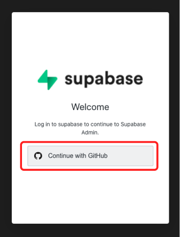
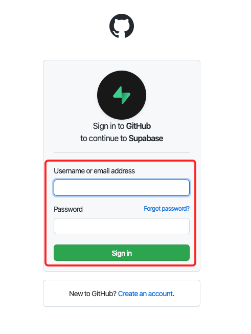

３．事前準備
✅ Supabase にサインアップ
Github アカウントを使って、Supabase にログインしましょう。
① Supabaseにアクセスする。
② [ Start your project ] をクリックする

③ [ Continue with GitHub ] をクリックする

④ Github のアカウント情報を入力後、[ Sign in ] を入力してください。

⑤ 以下のような画面が表示されれば成功です。

✅ Gitpod にサインアップ
開発環境の構築をしましょう。
① ここをクリックして Gitpod を起動
② 以下のような画面が表示されれば成功です。